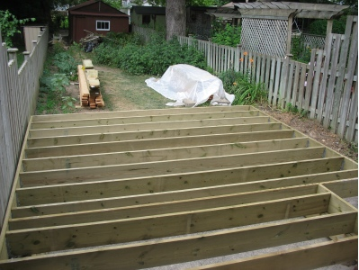

Daily Deck Update 3

Okay, I promise that I’m not going to keep on posting more and more
pictures every day, if only because I don’t think I could take 14 good
pictures on the 14th day… But today there were really three things I
wanted to point out. The first is the view from the back door out
into the garden. That’s pretty much how it’ll look every time I walk
out there. Well, with a top on it, and planters and a garbage box and
a barbeque, and stuff, but that’s the layout. The next shot is how it will look coming in to the house (if you’re
really small, like Cordelia). Amy noticed that our house looks a
little ramshackle, with the door all boarded up and stuff. (Cory (see
the previous
entry) was nice enough to screw a few boards in so that the girls
didn’t fall out.)
The next shot is how it will look coming in to the house (if you’re
really small, like Cordelia). Amy noticed that our house looks a
little ramshackle, with the door all boarded up and stuff. (Cory (see
the previous
entry) was nice enough to screw a few boards in so that the girls
didn’t fall out.) And finally, the shot from Delphine’s room, where you can see the
full-width stairs down the back (on the top of the picture); the
cut-out for the stairs on the side; and, uh, well I guess that’s all
you can see, but on top of the cut-out will be one of the planters,
wiht a matching planter on the other side; underneath the cut-out will
be the garbage-box-thing; on the lower left will be the barbeque, and
the upper half will have a table and chairs for lounging.
And finally, the shot from Delphine’s room, where you can see the
full-width stairs down the back (on the top of the picture); the
cut-out for the stairs on the side; and, uh, well I guess that’s all
you can see, but on top of the cut-out will be one of the planters,
wiht a matching planter on the other side; underneath the cut-out will
be the garbage-box-thing; on the lower left will be the barbeque, and
the upper half will have a table and chairs for lounging.
There’s also a nice amount of space on the right for my bicycle, so I
guess I should figure out a way to make that area a little smoother
and nicer to bike or walk on.

{kind=link}
{kind=link}
{kind=link}
{kind=link}
{kind=link}